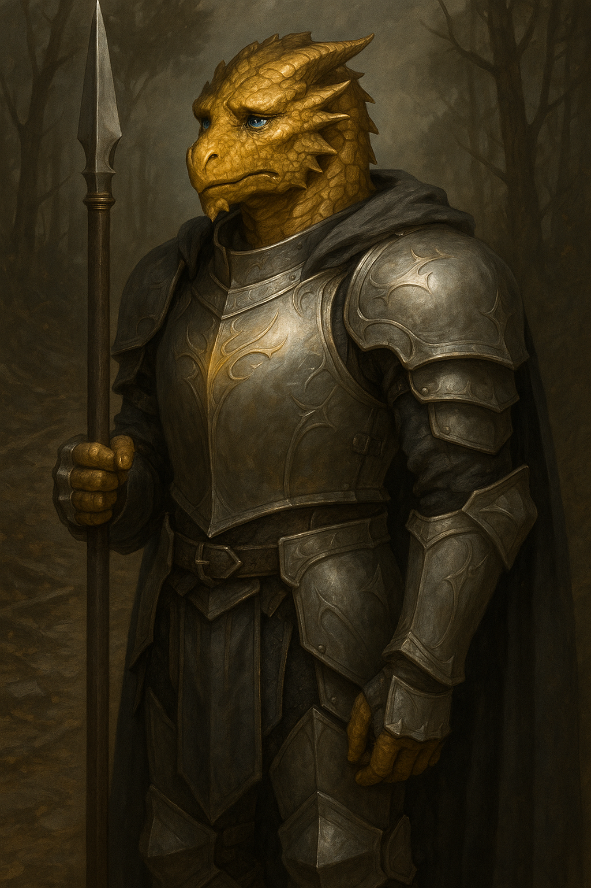

Belvarax "Gobsmack" Allimander¶
Keywords: Moral dilemmas, Reluctant tank, Party daddy

"Let the world scorn me, call me coward. I've made peace with being misunderstood. If I defended myself, I'd be serving my pride, not my oath."
Dragonborn Paladin. Party daddy universally scorned for his reluctance to smite baddies. The gentle shepherd in the back.
Character overview¶
- Race: Dragonborn
- Class: Paladin (Oath of Devotion) lv 5
- Background: Farmer
- Alignment: Lawful Good
- Party Role: Tank, Face, Secondary healer, Party conscience
Quick Intro¶
Quick Intro
At the Table
- Patient to a fault, polite even when being ripped off or bullied
- Never raises his voice, but his nostrils glow when his patience wears thin
- Fears staining his soul more than losing honor in others' eyes
- The party's gentle shepherd—prime candidate for party dad with quiet gravitas
Backstory (Short Form)
Belvarax was a gallant paladin who battled goblin raiders until he discovered the "raids" were desperate attempts to feed starving families displaced by mining companies. His oath became a tool of oppression in corrupt hands. He retreated to the mountains and returned changed, reinterpreting his vows to prioritize compassion over hasty judgment. Many now call him "Gobsmack" and consider him a coward. Other paladins scorn his constant indecision, yet he has not lost his divine powers.
Playing Belvarax
- Combat: Experienced warrior who protects allies but refuses to promise anything—action requires investigation first. Won't berate the party for pub brawls, but when he steps in, it matters.
- Roleplay: Speaks with quiet conviction and philosophical patience. Never curses or loses his temper, though fire breath may flicker when pressed. Deflects personal attacks with gentle irony.
- Party Synergy: Natural protector who never leaves allies to face storms alone. Overthinks rather than undercares—his flaw is analysis paralysis, not apathy.
Deep Dive¶
Deep Dive
Character Psychology¶
Belvarax used to believe in confidence, commitment. Now he believes more in compassion and disciplined doubt, refusing to jump to hasty conclusions. Every story has another side, even if it takes years to find. But what is a year in the eyes of the Gods?
He lives not to be honored, but to avoid staining his soul. He will protect whoever he believes are the weak in times of crisis, but he won't run anybody's errands. Any truth worth fighting for has to be complicated, and so every fight must be fought as much with the mind as the heart.
Even so, he never leaves an ally to face the storm alone. Any good party needs a gentle shepherd in the back, and that is where Belvarax feels his calling. He is not so much self-effacing as deeply pessimistic about anybody's chances of doing real good in the world. Even so, he still tries in his own way.
Belvarax has the patience of a saint and will likely be kind and polite, even when he knows he is being ripped off, played for a fool or downright bullied. He's not easily triggered like that.
However, there's one cinder that burns in his heart and can allow him to show a very different side: Marielthra "Mariel" Cinderwing, his childhood crush from back at the farm. A magnificient Dragonborn woman who was always larger than life, charismatic in a more flamboyant way, where Belvarax was more reserved and grounded. Perhaps they will meet again, and perhaps that's when Belvarax will truly have to reconsider his vows, and discover he has buttons no one has pressed in a long time?
Ultimately, Belvarax chose not to become the leader of a goblin resistance against the greedy mining companies. That came with its own set of hard moral obligations for Belvarax. Among them, he had to make an entirely new intepretation of the Paladin Oath of Devotion.
But Belvarax is a simple farmer. His new system is built from sincerity, patience and experience, not rigorous study or intellect. He lacks the head for politics, so he tries to stick with what he knows, so that he won't have to disappoint the gods or himself by having to back down:
Oath: "Let your word be your promise." Interpretation: Never give a promise, since promises depend on circumstances beyond your control. Breaking a holy promise is sacrilege before the Gods.
Oath: "Protect the weak and never fear to act." Interpretation: This is not a license to act with impunity. Firstly, who are the weak? What if raiding goblins lack access to other means of survival? Action without investigation is not bravery, but reckless conviction of your own infallibility. That is a hallmark of an evil-doer. Therefore, investigation is a necessary part of action, and not a sign of fear.
Oath: "Let your honorable deeds be an example." Interpretation: this implies there are also dishonorable deeds. Therefore you must be careful to not set bad examples. It's more important to not do wrong, since it takes more effort to rectify mistakes once made, than to not make them in the first place. A life takes many years of constant love and nurture to grow, but only a moment of force to undo. Therefore, growing and sheltering a life is the most honorable deed. Who then should I take my examples from?
Belvarax is an experienced warrior. He wouldn't start berating his party for every pub brawl. But when he does step in, he carries quiet gravitas, and is prime candidate for party dad.
The saintly act isn't just humility, it's the result of dedicated discipline. But not even a saint can stay patient forever. An occasional flash of fire reminds everyone there's still a dragon in there. He never raises his voice, but he doesn't have full conscious control of his fire breath, so his friends have learned to tell by the glow in his nostrils when his patience is being tested. His biggest flaw is overthinking, not undercaring.
Sample Quotes¶
"Let the world scorn me, call me coward. I've made peace with being misunderstood. If I defended myself, I'd be serving my pride, not my oath."
"Yes, some goblin tribes do torture their victims. That's not what I'm condoning. I'm asking, what did the mayor do with the last goblin they captured?"
"Groats again? Oh, I'm not complaining... But didn't I contribute 20 gold to the food budget last week? Those are lovely new boots, by the way."
"While I've no idea what's going on here, you all clearly need to calm down. If you want to get to this girl, you're going through me. And I breathe fire."
"Death is easy, life is hard. Killing is a fast solution, talking is a patient one. Being a Paladin is about never choosing the easy way."
"No, I don't subscribe to the children's-book morality where you just smite the evildoers and then get a lavish feast. That's fairy tale logic."
"Gods above, if this is wrong, let me see it. If it is right, let me bear it."
Full Backstory¶
Belvarax began as a farmer on Adlerfield, where he once dreamed of a simple life with his childhood friend Mariel, though he never found the words to win her heart. When goblins raided his fields, he took the Paladin oath. He was gallant then, and honorable. He's not considered very gallant anymore, because he ultimately stuck to his honor before his pride.
He spent a long time battling goblin raiders and rooting out local bandits, believing each act of violence would push the world toward order and light. One early morning, he confronted a goblin stealing potatoes, only so spot the starving child clutching a rag doll behind her. When he briefly lowered his pike in confusion, the goblin mother saw the opportunity and bolted.
He traced the raid back to their village, Belvarax confronted the Goblin Matron Shatrag, and finally learned that the goblins had their lands claimed by mining and lumber operations of the Satriani merchant's guild. Their "raids" were desperate attempts to feed their young.
Meanwhile, the corrupt mayor Ozello rose to power in the wake of the roads he kept clear by the sweat of his brow. The ruthless mining tycoon Colette Satriani was honored with a statue for her contributions and mercenary companies bashing vulnerable goblin camps. Any "greenskin" captive faced cruelty and ridicule in the town square.
Meanwhile, Belvarax was the guest of honor at a grand banquet in the Satriani villa. He watched whole platters of meat and exotic fruits scraped into bins.
His oath had turned into a tool of oppression in the hands of politicians and businessmen. In silence, he rose from the table and left. He could have turned against them all, but was that truly the Paladin way? For lack of clear answers, Belvarax retreated to the mountains, only returning several months later, as a changed man.
Now, many call him a coward and hypocrite. Other paladins scoff at his constant indecision. He's been more or less cast out of the order. Many locals refer to him as "gobsmack" since he's become so paralyzed because of his "goblin love".
Some Paladins have gone even further. Satine Boyard, Dean of the Chapter, calls him an infidel and regards him as an affront to the order. The last time they met, her blade left its scabbard. Although he was pressed, Belvarax held his ground without retaliating. She was finally talked down by the full congregation of Elders, plus the Chapter Librarian.
Even so, he has not lost his Paladin powers. His Oath is mysteriously still considered kept by those who watch from above.
Marielthra "Mariel" Dawnscale¶
(Add only with explicit player and DM consent)
Dragonborn woman of deep green scales, steady hands, and a laugh that still makes Belvarax's stomach knot. They grew up side by side on neighboring farms in the Amberfield valley. Where Belvarax was cautious and deliberate, Marielthra was bold, singing while she worked, haggling at market stalls, and daring him into mischief. Belvarax never managed to confess his feelings. His oath, his battles, and later his exile kept him at a distance. Today, he knows little of what became of her.
For the DM: suggestions and ideas
DM Suggestions and Ideas¶
Force clear moral emergencies: scenarios where inaction isn't an option, e.g., villagers facing tax collectors from a robber baron. Make the choice simple: act now or they die.
Use "last stand" spots. Give him scenes where he alone can hold a door, bridge, or ritual circle. Reward his protective instinct. Let those moments matter: a child remembers him, an ally survives against the odds, an enemy hesitates to escalate.
Check in with the player if they're interested, and if you get a green light, add the childhood crush Mariel Cinderwing as a truly difficult challenge. She may have gotten in bad company, or she may be doing the right thing, but through means Belvarax can't approve of. What if she's a skilled Rogue, robbing the mining companies blind, but not too zealous about the "redistribution" part?
You could contrast Belvarax with other Paladins, have them sneer at his hesitation, his refusal to promise, that he argues ethics mid-battle. He's a clown in their eyes. Satine Boyard, believer in unquestioning fury and devotion, may even excommunicate him or brand him an apostate, showcasing deep institutional rot in the order and giving the players something new to worry about.
Or frame him as a "theological anomaly": he's proof that the oath can be interpreted in a way that undermines the institutions built around it. To the church, he's dangerous: he might be right, and their protection of the merchant guilds and human settlers' expansion might be framed as illegitimate. Maybe they see Belvarax as a serious threat?
Mechanical build and PDF download¶
Level 5 Build
| STR | DEX | CON | INT | WIS | CHA |
|---|---|---|---|---|---|
| 16 (+3) | 10 (+0) | 14 (+2) | 8 (-1) | 12 (+1) | 16 (+3) |
Combat Stats¶
| AC | HP | Hit Dice | Speed | Initiative | Prof. Bonus |
|---|---|---|---|---|---|
| 20 | 54 | 5d10 | 30 ft. | +0 | +3 |
Saving Throws: Wisdom: +4, Charisma: +6 Resistances: Fire
Proficiencies¶
Skills: Animal Handling +4, Athletics +6, Insight +4, Nature +2
Armor: Light Armor, Medium Armor, Heavy Armor, Shield | Weapons: Simple Weapons, Martial Weapons
Tools: Carpenter's Tools | Languages: Common, Draconian, Goblin
Feats¶
- Tough: +2 to HP per level
- Sentinel: Attack of Opportunity reduces enemy Speed to 0, can perform when enemy in range attacks any other target.
Equipment¶
Splintmail, Pike, Shield, Longsword, Holy Symbol
Spellcasting¶
Level 1: Bless, Compelled Duel, Cure Wounds, Divine Smite, Heroism, Protection from Evil and Good, Shield of Faith Level 2: Aid, Find Steed, Prayer of Healing, Warding bond, Zone of Truth
Session Zero¶
Session Zero Considerations
Content Notes: Themes of institutional corruption, moral ambiguity, and the weaponization of religion. Explores colonialism, displacement of indigenous peoples (goblins), and systemic oppression. Contains references to starvation, cruelty to prisoners, and excommunication/religious persecution. No graphic violence described, but heavy moral weight throughout.
Representation Notes: Character explores reinterpreting religious oaths and questions institutional authority. May resonate with players who have experienced religious trauma or struggled with moral clarity in complex situations.